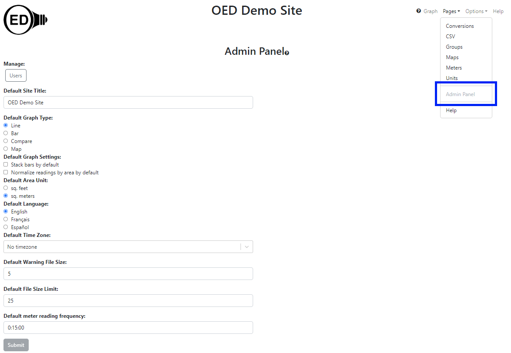

OED Documentation
Site Settings
Version V1.0.0
Documentation overview
Admin documentation
Information
Site Management
Data Acquisition
Site Installation
User documentation
Documentation versions for this page
These features are only available to select people who oversee the OED site (called admins) so this information is not usually of interest to a general user.
Overview
The admin panel page allows admins to change site preferences and control users. It is accessed from the "Pages" dropdown menu by clicking "Admin Panel" as shown in the following figure (highlighted in the blue rectangle where "Admin Panel" is grayed out since it has already been clicked). 
Usage
Each area of the page is described below.
Users
Clicking this button allows admins to manage the users on the system. Documentation on this feature is on the admin user documentation page.
Default Site Title
Clicking the box below this label will allow one to enter or edit the OED site title shown at the top of each page. The title should be kept fairly short so that it does not take up too much space on each page. The title will remain blank until one is entered.
Default Graph Type
The admin can control the graph type that will appear when a user first loads OED. The user can still change to another graph type if they wish. The types of graphs that can be chosen mirror the ones allowed. Simply click the circle next to the desired choice. The default will be "Line" unless changed.
Default Graph
Clicking the Stacking bars by default option makes the initial bar graphic show as single, stacked bar for each time frame. By default this is un-clicked/off.
Clicking the Normalize readings by area by default option makes the initial graphic show values normalized by area. By default this is un-clicked/off. When normalization by area is on only meters and groups with associated area can be graphed.
Default Area Unit
This determines the initial area unit used when a user graphs data normalized by area. It is initially "sq. meters". Clicking the other choice will uncheck the currently selected choice.
Default Language
Clicking one of the languages below this label will set OED to use that language for its strings within the application for all users. The default language is "English" until changed. Users can manually change the language if desired.
Default Time Zone
OED works with time in a time zone neutral way. However, when data is acquired into OED that honors time zones then this needs to be known. If a site only has meters in a single time zone and is not worried about daylight savings then this setting is not necessary. However, it is not a bad idea to set this to the local time zone to be safe as "No timezone" is the default. This will be the default time zone for meters but can be changed for individual meters on the admin meter pages. The dropdown menu contains every possible standard time zone in the world. One can type at the top to search the list. Note this has no impact on what is shown within OED and is strictly for data acquisition.
Default Warning File Size
The exporting data page discusses file size limits for raw exports. This value controls the size of what is considered a small file.
Default File Size Limit
The exporting data page discusses file size limits for raw exports. This value controls the size of what is considered a large file which is also the same as the upper limit for a medium size file.
Default meter reading frequency
OED uses the meter reading frequency to determine the quality of a line graphic shown. This will be the reading frequency for meters but can be changed for individual meters on the admin meter pages. The default value is 15 minutes (00:15:00). The standard format is HH:MM:SS, e.g., 00:15:00 for 15 minutes, but OED can also accept other formats such as 3 hours or 4 days. If an invalid or unknown format is used then on "Submit", the message "Failed to submit changes" will appear and the changes are not saved. Once a correct format is used then the submit will work properly.
Submit
The "Submit" button will save all changes made on this page. It will be grayed out and un-clickable until a change is made on the page. It is important to click the "Submit" button to save any changes to the database so users will see this change. Normally OED will warn if there are changes to the page and one attempts to leave the page before saving.
Details
It is not difficult to include additional languages within OED. If one is willing to translate the strings, OED can provide a file to type them in that can then be permanently stored with our source code so your site and other sites will always have that language. OED will also modify the software to show that language choice. OED welcomes the addition of languages to OED. If interested then please contact us.